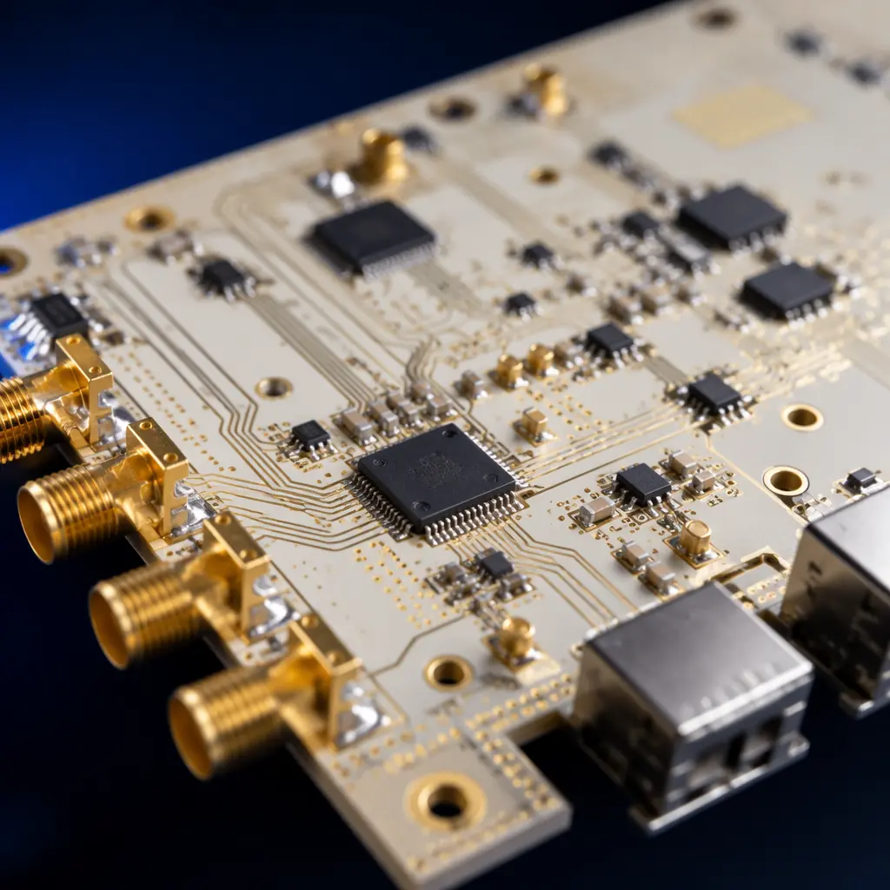
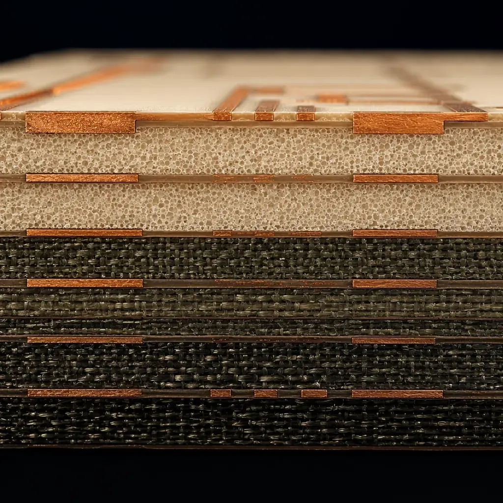
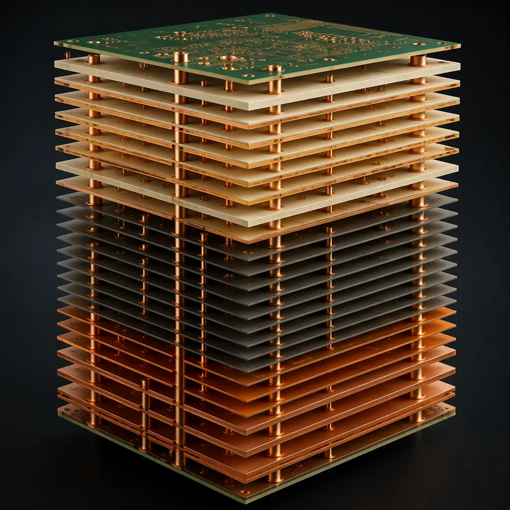
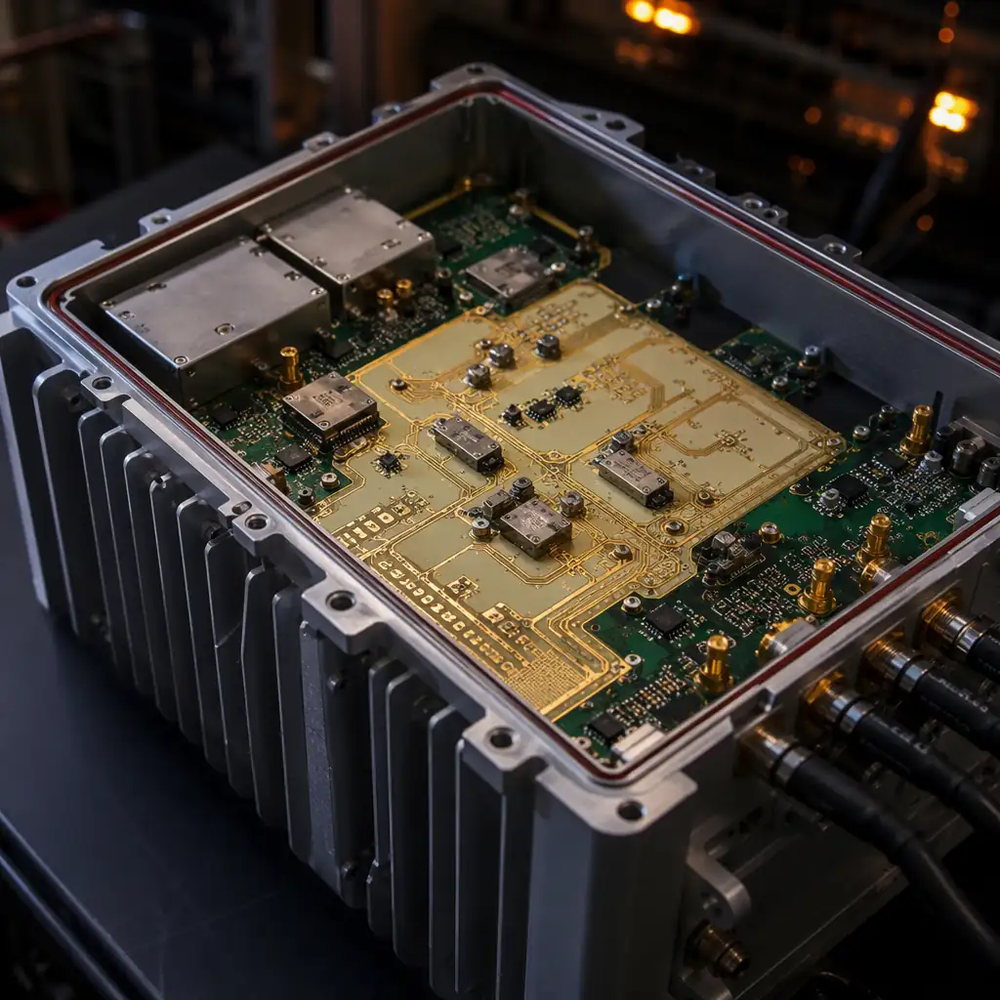

43|
43| Ericsson's Q1 2026 mobility report projects 5.5 billion 5G subscriptions by the end of 2026, and each base station driving those connections contains 8-15 PCBs operating at frequencies where standard FR-4 ceases to be a reliable dielectric. At 3.5 GHz — the most common 5G mid-band frequency — FR-4's dielectric constant (Dk) has already drifted 8-12% from its 1 MHz datasheet value. At 28 GHz mmWave, the drift exceeds 25%, and insertion loss makes any trace longer than 25 mm unworkable.
58| 59|This is why telecom PCB procurement is not just about finding a lower per-unit price. It's about qualifying a manufacturing partner who understands that Dk tolerance of ±0.05 at 10 GHz is not a "nice to have" — it's the difference between a functioning phased array and a 25% link budget penalty. At Huaxing PCBA, our Shenzhen facility processes Rogers RO4000, PTFE, and hybrid FR-4/RF stackups daily across 32-layer capability, with ±5% impedance control verified by TDR on every production panel — serving 150+ customers in 30+ countries.
60| 61|
62| 63|RF Material Selection — Rogers, PTFE, and Hybrid Stackups
64| 65|The substrate decision is made in the first hour of a telecom PCB design, and every subsequent design rule flows from it. At frequencies above 1 GHz, the material properties that matter are not the same ones you'd check for a 2-layer power supply board:
66| 67|| Material | Dk @ 10 GHz | Df (Loss Tangent) @ 10 GHz | TCDk (ppm/°C) | Best Use Case | Relative Cost |
|---|---|---|---|---|---|
| Standard FR-4 (Tg130) | 4.3-4.8 (unstable) | 0.020-0.025 | -200 to -400 | Digital control / sub-500 MHz only | 1× |
| High-Tg FR-4 (Tg170-180) | 4.0-4.5 | 0.018-0.022 | -150 to -250 | Baseband processing <2 GHz | 1.3× |
| Rogers RO4350B | 3.48 ±0.05 | 0.0037 | +50 | 3-6 GHz 5G sub-6GHz, power amplifiers | 4-6× |
| Rogers RO4003C | 3.38 ±0.05 | 0.0027 | +40 | 6-20 GHz backhaul, mmWave front-end | 5-8× |
| Rogers RO3003 (PTFE/ceramic) | 3.00 ±0.04 | 0.0013 | -3 | 20-77 GHz mmWave, automotive radar | 8-12× |
| Rogers RT/duroid 5880 (PTFE) | 2.20 ±0.02 | 0.0009 | -125 | Satcom, defense, >40 GHz | 12-15× |
For most commercial 5G base station designs, the practical sweet spot is a hybrid stackup: Rogers RO4350B on layers 1-2 (RF front-end) bonded to High-Tg FR-4 on layers 3-14 (digital baseband and power distribution). This hybrid approach keeps the BOM cost within 1.8-2.5× of an all-FR-4 board while delivering the RF performance of a pure Rogers stackup on the critical signal layers.
82| 83|Procurement reality check: A 12-layer hybrid Rogers/FR-4 board for a 5G remote radio unit (RRU) typically costs $40-65 per unit at 1,000-unit volumes. An equivalent all-Rogers board runs $120-180. The hybrid approach delivers 90% of the RF performance for 35% of the material cost — and is the default recommendation from our engineering team for sub-6 GHz 5G designs. For mmWave (28 GHz+), all-Rogers or PTFE is non-negotiable.
85|
88| 89|Impedance Control at GHz Frequencies — Why ±5% Tolerance Matters
90| 91|At 2.4 GHz WiFi frequencies, a 10% impedance mismatch creates a return loss of -20 dB — the signal reflects 1% of its power, and the system works fine. At 28 GHz mmWave, that same 10% mismatch produces -10 dB return loss: 10% of your transmitter power bounces back into the PA, degrading both signal integrity and amplifier lifetime. The physics doesn't scale linearly — it punishes exponentially.
92| 93|Three impedance control regimes for telecom PCBs
94| 95|| Regime | Frequency | Required Tolerance | Application | Verification Method |
|---|---|---|---|---|
| Standard | <1 GHz | ±10% (50Ω ±5Ω) | Baseband digital, DDR memory buses | Test coupon + flying probe |
| Controlled | 1-6 GHz | ±7% (50Ω ±3.5Ω) | Sub-6 GHz 5G, WiFi 6E, GPS | TDR on every panel, impedance coupon |
| Precision RF | 6-40 GHz | ±5% (50Ω ±2.5Ω) | mmWave 5G, satcom, phased array | TDR on every panel + cross-section micrograph per lot |
Hitting ±5% at 28 GHz requires control over variables that are noise at lower frequencies. The dielectric thickness between layer 1 and layer 2 must stay within ±8 μm across the entire panel — a 12 μm deviation shifts impedance by 1.2Ω at 50Ω target. Copper roughness (Rz) on the signal layer needs to be below 2 μm because at mmWave frequencies, the skin depth is only 0.4 μm and current travels entirely on the copper surface — roughness increases effective path length and loss. Our facility maintains Rz ≤ 1.5 μm on controlled-impedance layers through a reverse-treated foil process, verified by laser profilometry.
107| 108| 109|
110|
109|
110| For differential pairs — which carry every high-speed serial link in a modern base station (CPRI/eCPRI at 25 Gbps, JESD204B/C at 12.5 Gbps) — the tolerance tightens further. Differential impedance of 100Ω ±5Ω requires line width and spacing controlled to ±10 μm. This is where our impedance control process and DFM review intersect: the Gerber-to-production translation must account for etch factor, copper plating distribution, and laminate thickness variation before the first panel is fabricated.
111| 112|High Layer Count PCBs for 5G Base Stations — 20-32 Layer Capability
113| 114|A modern 5G massive MIMO (mMIMO) antenna unit contains 64 transmit and 64 receive channels, each with independent beamforming. The digital beamforming processor alone requires a 20-26 layer PCB to route 64×64 channel data through FPGA fabric to 64 independent DACs and ADCs — while isolating 400W of total PA power on adjacent layers without coupling into sensitive receiver chains.
115| 116|High layer count doesn't just mean "more layers." In telecom PCBs, it means managing three distinct electrical domains on one board:
117| 118|-
119|
- RF domain (layers 1-4): 50Ω microstrip and grounded coplanar waveguide on Rogers substrate. These layers carry 28 GHz signals with insertion loss budgets of <1.5 dB per inch. Via transitions between layers are avoided — every transition costs 0.3-0.5 dB at mmWave. 120|
- High-speed digital domain (layers 5-18): 25 Gbps serial links on Megtron 6 or equivalent low-loss FR-4. 256 differential pairs running CPRI at 24.33024 Gbps each, length-matched to within ±2 mil across the entire board. The routing density on a 64T64R beamformer requires HDI microvia technology with 0.1 mm laser vias connecting layers 5-8. 121|
- Power distribution domain (layers 19-26): 48V DC input distributed through 4oz copper planes with 200A total current capacity. Each of 64 GaN PAs draws 3-5A at 28V — the power plane IR drop must stay below 50 mV across the entire 300×400 mm board area. This requires copper weight of 3-4oz on power layers with thermal via arrays under each PA die. 122|

125| 126|Our Shenzhen facility produces 2-32 layer PCBs with 3/3 mil minimum line width/spacing. For 20+ layer telecom boards, the lamination cycle alone takes 4-6 hours under 200°C and 350 PSI — compared to 90 minutes for an 8-layer board. The press cycle must be uniform across the entire panel to prevent layer-to-layer registration drift exceeding 75 μm. A 50 μm registration error on a 26-layer board causes a blind via to miss its target pad by 40% of the pad diameter — an open circuit that only shows up after 5 thermal cycles.
127| 128|Thermal Management in Telecom Equipment
129| 130|Telecom equipment operates in environments that combine high ambient temperature with zero airflow margin. A 5G base station mounted on a rooftop in Shenzhen sees 55°C ambient in August — with the sun heating the sealed enclosure to 70°C internally — while the GaN PAs inside generate another 300W of localized heat. The PCB substrate must survive this with minimal Dk drift and zero delamination over a 10-year deployment.
131| 132|| Thermal Parameter | Requirement | Why It Matters |
|---|---|---|
| Glass transition temperature (Tg) | ≥180°C (Rogers RO4350B: >280°C) | Above Tg, CTE increases 3-5×, causing via barrel cracking over thermal cycles |
| Decomposition temperature (Td) | ≥360°C (5% weight loss) | Lead-free assembly peaks at 260°C — substrate must survive reflow with margin |
| Z-axis CTE (pre-Tg) | <50 ppm/°C | High Z-CTE causes PTH barrel cracking after 500+ thermal cycles (-40°C to +125°C) |
| Thermal conductivity | 0.5-0.7 W/m·K (Rogers); 1-3 W/m·K (aluminum-backed) | FR-4 is 0.3 W/m·K — insufficient for PA arrays dissipating >5W per device |
| CAF resistance | >1,000 hours at 85°C/85% RH, 100V DC bias | Conductive Anodic Filament growth between adjacent vias is the #1 field failure mode in outdoor telecom |
For the highest power density sections — the PA array on a mMIMO antenna — we recommend coin-attach technology: a solid copper coin (typically 6-10 mm diameter) press-fit into a cavity routed through the PCB, providing a direct thermal path from the GaN die to the aluminum enclosure baseplate. The thermal resistance drops from ~15°C/W (thermal vias only) to ~2°C/W with a copper coin — keeping junction temperature below the 175°C GaN reliability threshold. This technique is standard in our automotive power electronics production and transfers directly to telecom PA thermal management.
146| 147|
148| 149|Telecom PCB Specification Checklist — 8 Questions Your Supplier Must Answer
150| 151|Before issuing a PO for telecom-grade PCBs, verify that your manufacturer can answer these eight questions with specific production data — not marketing language:
152| 153|"What is your Dk tolerance guarantee at 10 GHz on Rogers RO4350B — and can you show lot-to-lot test data?"
157|Rogers datasheets specify Dk 3.48 ±0.05, but this is measured on raw laminate before processing. Etching, oxide treatment, and lamination can shift effective Dk by 0.05-0.10. Suppliers who can't show post-lamination Dk test data per lot are not controlling the variable that matters.
158|"How do you verify impedance on every panel — TDR coupon or actual board trace?"
165|Test coupons on the panel edge are standard. But coupon impedance can differ from actual trace impedance by 2-5Ω due to different copper density and etch loading. The gold standard is test traces on the board itself, measured at the panel stage before depaneling. Our facility runs TDR on both coupon and board-level test traces for controlled-impedance orders.
166|"What is your registration tolerance for layer-to-layer alignment on 20+ layer boards?"
173|Ask for a cross-section micrograph from a recent 20+ layer production run. Measure the via-to-pad alignment. Acceptable: ≤50 μm. Warning sign: ≥75 μm. Red flag: supplier can't produce a cross-section image. At Huaxing, our standard is ≤50 μm registration on all layers, verified by cross-section per production lot on boards ≥20 layers.
174|"What surface finish do you recommend for RF signal layers — and what is the insertion loss penalty?"
181|ENIG is the most common telecom finish, but the nickel layer (3-6 μm) is ferromagnetic and adds 0.05-0.15 dB insertion loss per inch at 28 GHz compared to bare copper. Immersion silver eliminates the nickel and has zero insertion loss penalty, but requires nitrogen-purged storage (tarnishes in 48 hours of open air). Our recommendation for mmWave: immersion silver for prototype/low-volume, ENIG for production with compensated loss budget. For surface finish selection below 6 GHz, ENIG is the default.
182|"What is your minimum annular ring for laser vias on Rogers substrates?"
189|Rogers materials ablate differently than FR-4 under CO₂ lasers — the ceramic filler creates a rougher via wall that requires a larger pad to guarantee 360° capture. For 0.1 mm laser vias on RO4350B, the minimum pad diameter should be 0.25 mm (75 μm annular ring). Suppliers quoting 0.20 mm pads for 0.1 mm vias on Rogers are gambling with open circuits.
190|"Do you have in-house TDR, cross-section, and thermal cycle capability — or do you outsource?"
197|Outsourced testing adds 3-5 days to the quality feedback loop. For telecom PCBs where every lot is custom and a failed lot costs 2-3 weeks, in-house testing is non-negotiable. Our facility runs AOI, X-Ray, TDR, flying probe, and cross-section analysis in-house on every production line.
198|"What is your minimum order quantity for a 24-layer hybrid Rogers/FR-4 board?"
205|The NRE for a 24-layer hybrid board is substantial — typically $2,500-4,000 for tooling, impedance test coupons, and first-article cross-sections. Suppliers quoting 5-piece minimums at this complexity are either eating NRE (unsustainable) or skipping verification steps (dangerous). Realistic minimums: 25-50 pieces for prototype, 100+ for production. At Huaxing, we provide a transparent NRE breakdown so you see exactly where the setup cost goes, and our prototype-to-production pipeline preserves your NRE investment through the volume ramp.
206|"Can you provide full lot traceability from laminate to finished board?"
213|Telecom OEMs require traceability for warranty claims and regulatory compliance (FCC Part 30 for mmWave, ETSI EN 301 908 for 5G in Europe). Every PCB should be traceable to its laminate lot number, lamination press cycle, plating batch, and solder paste lot. Our facility maintains medical-device-grade traceability systems — each board carries a unique 2D barcode linking to the complete production record: laminate manufacturer lot, lamination temperature profile, plating current density, AOI defects, and TDR impedance measurements.
214|At Huaxing PCBA, telecom PCB production runs on the same IATF 16949-certified processes as our rigid-flex and advanced materials lines — 32-layer capability, Rogers and PTFE substrate processing, ±5% impedance control verified by TDR on every panel, and complete lot traceability. Our English-speaking RF engineering team reviews stackup proposals within 4 hours and can advise on material selection tradeoffs for your specific frequency, power, and cost targets. Turnkey assembly — including 0201 placement, BGA with 0.3 mm pitch, and conformal coating for outdoor deployment — is available on the same PO.
218| 219| 247|
248|
247|
248|